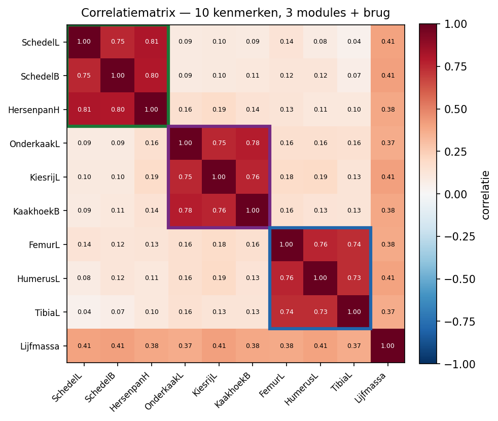
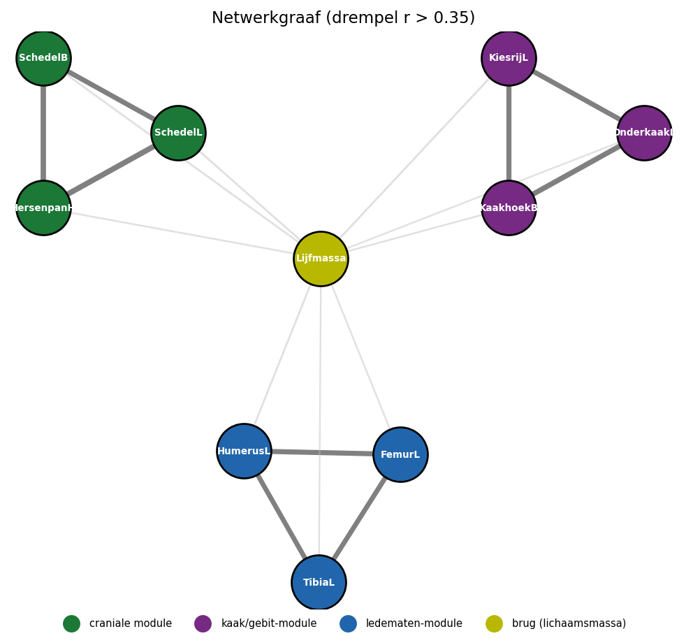

# De 10x10 correlatiematrix van de kenmerken. In de praktijk komt deze
# rechtstreeks uit je data met cor(); hier voeren we hem met de hand in
# zodat het voorbeeld reproduceerbaar is.
kenmerken <- c("SchL","SchB","HpH","OkL","KrL","KhB","FeL","HuL","TiL","Lij")
R <- matrix(c(
1.00, 0.75, 0.81, 0.09, 0.10, 0.09, 0.14, 0.08, 0.04, 0.41,
0.75, 1.00, 0.80, 0.09, 0.10, 0.11, 0.12, 0.12, 0.07, 0.41,
0.81, 0.80, 1.00, 0.16, 0.19, 0.14, 0.13, 0.11, 0.10, 0.38,
0.09, 0.09, 0.16, 1.00, 0.75, 0.78, 0.16, 0.16, 0.16, 0.37,
0.10, 0.10, 0.19, 0.75, 1.00, 0.76, 0.18, 0.19, 0.13, 0.41,
0.09, 0.11, 0.14, 0.78, 0.76, 1.00, 0.16, 0.13, 0.13, 0.38,
0.14, 0.12, 0.13, 0.16, 0.18, 0.16, 1.00, 0.76, 0.74, 0.38,
0.08, 0.12, 0.11, 0.16, 0.19, 0.13, 0.76, 1.00, 0.73, 0.41,
0.04, 0.07, 0.10, 0.16, 0.13, 0.13, 0.74, 0.73, 1.00, 0.37,
0.41, 0.41, 0.38, 0.37, 0.41, 0.38, 0.38, 0.41, 0.37, 1.00),
nrow = 10, byrow = TRUE,
dimnames = list(kenmerken, kenmerken))
round(R, 2)5 Sepia: de wiskunde achter de standaardfout
5.1 Theoriedeel — van variantie-optelling naar canalisatie
Note
In het practicum ontdekte je iets vreemds: de waargenomen standaardfout (de spreiding van de tafelgemiddelden) was groter dan de geschatte standaardfout uit de formule. Je vond twee oorzaken, meetfout uit de studentparen en een tafel-effect uit de ANOVA. Dit theorie deel legt de wiskunde eronder bloot, en laat zien dat diezelfde wiskunde, variatie optellen in losse stukken het concepts is achter de \(t\)-toets, de bootstrap, en een diep evolutiebiologisch begrip: canalisatie. We nemen aan dat je de \(t\)-test kent; we ontleden hier niet de test zelf, maar de grootheid die hem draagt.
6 Variatie telt op
De hele standaardfout hangt aan één regel. Voor twee onafhankelijke grootheden \(A\) en \(B\) geldt: \[\mathrm{Var}(A + B) = \mathrm{Var}(A) + \mathrm{Var}(B).\]
Varianties tellen op; standaarddeviaties niet. Dit is de stelling van Bienaymé, en ze is het fundament onder alles wat volgt.
Pas dit toe op een gemiddelde van \(n\) onafhankelijke metingen \(\bar x = \tfrac{1}{n}\sum x_i\). Elke \(x_i\) heeft variantie \(\sigma^2\), en na optellen en delen door \(n\):
\[\mathrm{Var}(\bar x) = \frac{\sigma^2}{n} \quad\Longrightarrow\quad \mathrm{SE} = \frac{\sigma}{\sqrt{n}}.\]
Daar komt de \(\sqrt{n}\) vandaan. Niet uit een toverformule, maar uit het optellen van \(n\) onafhankelijke stukjes toeval. Dit is de één-steekproef-vorm: de standaardfout van één enkel gemiddelde.
De \(t\)-toets uit het practicum vergeleek echter twee gemiddelden. Het verschil is ook een som (van \(\bar x_1\) en \(-\bar x_2\)), dus de varianties tellen weer op:
\[\mathrm{Var}(\bar x_1 - \bar x_2) = \frac{\sigma_1^2}{n_1} + \frac{\sigma_2^2}{n_2}.\]
Onder de aanname van gelijke variantie wordt dit de two-sample-standaardfout \(s_p\sqrt{1/n_1 + 1/n_2}\) die je in weg 1 van het practicum gebruikte. De \(t\)-waarde is dan het verschil der gemiddelden gedeeld door deze SE: signaal gedeeld door ruis.
7 Waarom de formule in het practicum tekortschoot
De regel \(\mathrm{Var}(A+B)=\mathrm{Var}(A)+\mathrm{Var}(B)\) geldt onder de aannamen van onafhankelijkheid. In je Sepia-data is die onafhankelijkheid op één plek duidelijk geschonden. De twee metingen met dezelfde SampleID van student 1 en student 2 die hetzelfde dier meten, zijn per definitie onafhankelijk; ze meten letterlijk dezelfde zeekat, dus wordt de uitkomst van de meeting beperkt door dezelfde sample, een sample wordt niet ineens twee cm groter. Verschillende zeekatten (verschillende SampleID’s) zijn daarentegen wel in de kern onafhankelijke trekkingen uit de populatie.
Juist daarom is de middelingsstap uit het practicum zo belangrijk: door de twee metingen per SampleID te middelen tot één waarde per dier, haal je die afhankelijkheid eruit. Wat overblijft is één schone waarde per zeekat, en op díe waarden mag je de optelling \(\mathrm{Var}(A+B)=\mathrm{Var}(A)+\mathrm{Var}(B)\) weer gebruiken. In meer geavanceerde methoden maken juist gebruik van deze onafhankelijkheid maar dat is pas veel later in de opleiding.
Waarom viel de waargenomen SE dan tóch groter uit dan de formule voorspelde? Niet door gecorreleerde metingen, maar door een extra laag variatie die de formule niet meeneemt. Je kunt de totale spreiding namelijk in optelbare stukken opdelen:
\[\underbrace{\sigma^2_{\text{totaal}}}_{\text{alle spreiding}} = \underbrace{\sigma^2_{\text{tussen tafels}}}_{\text{tafel-effect}} + \underbrace{\sigma^2_{\text{binnen tafels}}}_{\text{biologie}} + \underbrace{\sigma^2_{\text{meetfout}}}_{\text{uit de paren, weggemiddeld}} .\]
De meetfout heb je door het middelen grotendeels verwijderd. De biologische spreiding binnen een tafel zit in de gewone formule. Maar het tafel-effect, dat de ene tafel toevallig grotere dieren kreeg, of net anders mat dan de andere, is variatie tussen de tafelgemiddelden, en die ziet \(s/\sqrt{n}\) niet: de formule kijkt binnen één groep, niet naar de verschillen tussen groepen. De waargenomen SE (de spreiding van de tafelgemiddelden) bevat dat tafel-effect wel, en valt daardoor groter uit. Dit heet variantiecomponenten-analyse; dezelfde optelling, nu gebruikt om variatie te ontleden in plaats van op te bouwen. Het is precies wat de ANOVA in het practicum voor je uitrekende.
Vraag. Waarom is het belangrijk om de twee studentmetingen per zeekat éérst te middelen, vóórdat je de tafelgemiddelden en de standaardfout berekent? Wat zou er misgaan als je in plaats daarvan alle losse metingen (twee per dier) als aparte, onafhankelijke waarnemingen zou behandelen?
8 Bootstrap: de steekproevenverdeling nabouwen
De SE formule veronderstelt een steekproevenverdeling, ze leunt op de centrale limietstelling (hier een kantlijn opmerking). Maar je kunt die verdeling ook rechtstreeks door de computer laten nabouwen, zonder formule. Dat is de bootstrap; doe alsof je ene steekproef de hele populatie is, trek er met terugleggen telkens een nieuwe steekproef uit, en bekijk de spreiding van de gemiddelden.
Wat maakt dit meer dan een trucje? Ten eerste laat de bootstrap de abstractie zien; de steekproevenverdeling wordt een histogram dat je kunt bekijken en de standaarddeviatie van kan bepalen. Ten tweede werkt hij ook waar de formule faalt, voor b.v. de mediaan, een ratio of een correlatie bestaat geen nette formules voor de standaard error, maar bootstrappen kan altijd. Ten derde, en dat is de brug terug naar het practicum: door uit de gepoolde data te trekken negeert de bootstrap de tafels, en reproduceert zo wat de formule zou geven. Juist door dat te vergelijken met de spreiding-tussen-tafels isoleer je het tafel-effect. De bootstrap geeft je de basis voor “hoe zou het zijn als er alleen toeval speelde”.
Vraag. De bootstrap-SE en de formule \(s/\sqrt{n}\) geven vrijwel hetzelfde getal, terwijl de waargenomen SE uit de tafels groter is. Wat zegt dat over wat de bootstrap wél en niet “ziet” in de data?
Notitie: Doel van deze vraag is dat computationele methode je noet ontslaat van nadenken en kennis van wikskunde, je moet de structuur van de data, bv dat van de verschillende tafels meenemen.
NoteVerband met surprisal
Bootstrappen is herhaald trekken uit een verdeling, precies de situatie waarin surprisal (\(-\log p\)) uit het informatietheorie-hoofdstuk leeft. Een bootstrap-gemiddelde ver in de staart heeft lage \(p\), dus hoge surprisal. De breedte van de bootstrap-verdeling (de SE) en de entropie van die verdeling meten allebei “hoeveel de uitkomst nog kan verrassen”. Voor een normale verdeling zijn ze direct gekoppeld via \(\log\sigma\). Onzekerheid, standaardfout en entropie zijn drie gezichten van dezelfde concept.
9 Van twee kenmerken naar meer: de covariantiematrix
In het practicum eindigde je met de correlatie tussen lengte en breedte. Die samenhang vang je formeel in de covariantiematrix:
\[\boldsymbol{\Sigma} = \begin{pmatrix} \mathrm{Var}(L) & \mathrm{Cov}(L,W)\\ \mathrm{Cov}(L,W) & \mathrm{Var}(W) \end{pmatrix}.\]
De diagonaal is de spreiding van elk kenmerk apart; de off-diagonaal zegt hoe sterk ze samen covariëren. De positieve \(\mathrm{Cov}(L,W)\) die je vond, is de “schuinte” van je scatterplot. Dit is dezelfde vetgedrukte matrix-taal (\(\mathbf{X}\), \(\boldsymbol{\Sigma}\)) uit de Bradford-assay en de regressie, nu toegepast op de samenhang tussen kenmerken.
Twee kenmerken is nog overzichtelijk. De biologie wordt pas interessant bij veel kenmerken tegelijk. Stel dat we van een gewerveld dier tien maten nemen: drie aan de schedel, drie aan de kaak en het gebit, drie aan de ledematen, plus de lichaamsmassa. De covariantiematrix is dan \(10\times 10\). Hoe lees je die?
10 Structuur in grotere matrixen
10.1 De matrix als getallen
De covariantiematrix (hier als correlatiematrix, geschaald tussen \(-1\) en \(1\)) is in eerste instantie gewoon een tabel met getallen:
SchL SchB HpH OkL KrL KhB FeL HuL TiL Lij
SchL 1.00 0.75 0.81 0.09 0.10 0.09 0.14 0.08 0.04 0.41
SchB 0.75 1.00 0.80 0.09 0.10 0.11 0.12 0.12 0.07 0.41
HpH 0.81 0.80 1.00 0.16 0.19 0.14 0.13 0.11 0.10 0.38
OkL 0.09 0.09 0.16 1.00 0.75 0.78 0.16 0.16 0.16 0.37
KrL 0.10 0.10 0.19 0.75 1.00 0.76 0.18 0.19 0.13 0.41
KhB 0.09 0.11 0.14 0.78 0.76 1.00 0.16 0.13 0.13 0.38
FeL 0.14 0.12 0.13 0.16 0.18 0.16 1.00 0.76 0.74 0.38
HuL 0.08 0.12 0.11 0.16 0.19 0.13 0.76 1.00 0.73 0.41
TiL 0.04 0.07 0.10 0.16 0.13 0.13 0.74 0.73 1.00 0.37
Lij 0.41 0.41 0.38 0.37 0.41 0.38 0.38 0.41 0.37 1.00De afkortingen staan res[pectivelijk voor:
- Kraniale module: de schedellengte, schedelbreedte, hersenpanhoogte.
- Kaak/gebit-module:onderkaaklengte, kiesrijlengte, kaakhoekbreedte
- Ledenmaten: femur-, humerus- en tibialengte.
- Lichaamsmassa (
Lij).
Als je goed kijkt, zie je de structuur al: hoge getallen (\(0{,}75\)–\(0{,}81\)) clusteren in blokjes langs de diagonaal, met lage waarden (\(\approx 0{,}1\)) ertussen, en de onderste rij (Lij, lichaamsmassa) zit overal rond \(0,4\). Maar een tabel met honderd getallen leest niemand prettig. Daarom kleuren we hem.
Vraag. Wijs, puur op de getallen, de drie groepen kenmerken aan die onderling sterk samenhangen. Welk kenmerk hoort bij geen enkele groep echt thuis, maar hangt met alle een beetje samen?
10.2 De matrix als heatmap
Zet elke correlatie om in een kleur (fel = sterk, bleek = zwak) en de structuur springt eruit:

In Figuur 10.1 springen drie blokken langs de diagonaal eruit. Binnen een blok correleert alles sterk; ertussen is het bleek. Zo’n blok is een ontwikkelingsmodule: een groep kenmerken die door hetzelfde ontwikkelingsproces wordt aangestuurd en daardoor samen varieert, schedelmaten, kaakmaten, ledematen. De lichaamsmassa kleurt overal lauw: zij hangt zwak met alles samen, want grotere dieren zijn overal groter. Dat is de allometrische relatie die je kan herkennen als de log-lineaire groeirelatie uit het allometrie-hoofdstuk.
10.3 Stap 3 — de matrix als netwerk
Dezelfde matrix kun je als netwerk tekenen: elk kenmerk een knoop, en een lijn tussen twee kenmerken als hun correlatie boven een drempel ligt (dikker = sterker).

In Figuur 10.2 zie je wat Figuur 10.1 je vertelde, maar nu als vorm: drie clusters (de driehoeken) en één centrale knoop die ze losjes verbindt. De blokken van de matrix zijn de clusters van de graaf — twee lezingen van hetzelfde object \(\boldsymbol{\Sigma}\).
Note
De graaf verbindingen hangt af van waar je de grens legt voor significante correlaties. Bij een hoge drempel, grote correlatie, valt hij uiteen in losse modules (de zwakke brug-lijnen lijfmassa verdwijnen); bij een lage drempel raakt alles met alles verbonden. De matrix gooit niets weg en is eerlijker; de graaf vereenvoudigt, maar toont de clusters direct op en kwalitatieve manier.
11 Modulariteit ís gekanaliseerde variatie
Waarom bewegen kenmerken binnen een module samen, en tussen modules niet? Omdat de ontwikkeling ze zo kanaliseert. Ter herinnering, Canalisatie is het vermogen van een ontwikkelingsproces om ondanks verstoringen (in genen of omgeving) steeds hetzelfde eindresultaat te leveren. Een sterk gekanaliseerd kenmerk heeft weinig variatie; gekanaliseerde kenmerken die samen worden aangestuurd, variëren bovendien samen.
Zo vertaalt canalisatie zich rechtstreeks naar de plaatjes:
- een module/blok/cluster is een groep kenmerken die als eenheid gekanaliseerd is, ze delen hun ontwikkelingssturing, dus hun variatie is gebundeld;
- de zwakke velden tussen blokken betekenen dat modules onafhankelijk kunnen variëren, precies wat modulariteit inhoudt, en wat evolutie de vrijheid geeft om aan de ene module te sleutelen zonder de andere te breken;
- Llichaamsmassa laat zien dat perfecte ontkoppeling niet bestaat: algemene groei lekt door alle modules heen, geen olifantenhoofd op en muis.
Dit sluit de cirkel met het practicum. Daar was het tafel-effect een ongewenste bundeling van variatie (waarnemers die samenhang opdrongen). Hier is de bundeling biologisch en gewenst: de ontwikkeling zelf bindt kenmerken samen. In beide gevallen is het dezelfde wiskunde, covariantie die de simpele optelling doorbreekt, maar de biologische betekenis is tegengesteld. Meetfout is anti-informatie; canalisatie is biologische informatie.
Vraag ter afsluiting. Een soort die extreem sterk gekanaliseerd is, heeft nauwelijks fenotypische variatie. Waarom kan dat een probleem zijn als de omgeving plotseling verandert? Formuleer het spanningsveld tussen robuustheid (nu) en evolueerbaarheid (later) in je eigen woorden.
12 Samenvatting
Eén regel, varianties van onafhankelijke stukken tellen op, droeg dit hele hoofdstuk. Ze gaf de \(\sqrt{n}\) in de standaardfout (Chapter 6), verklaarde waarom die formule tekortschoot zodra metingen samenhingen (Chapter 7), en werd door de bootstrap tastbaar nagebouwd (Chapter 8). Uitgebreid naar meerdere kenmerken werd ze de covariantiematrix, waarvan de blok- en clusterstructuur (Chapter 10) rechtstreeks de biologische modulariteit en canalisatie toont (Chapter 11). Telkens dezelfde beweging: variatie opsplitsen in een deel dat ergens door verklaard wordt, en een rest.
Wie dieper wil, vindt hieronder hoe deze structuur zich in eigenwaarden, entropie en zelfs de richting van evolutie laat vangen.
13 Honours — eigenwaarden, entropie en de richting van evolutie
TipVerdieping (honours)
De blokken samengevat in getallen. De structuur die je in Figuur 10.1 zag, vat exact samen door \(\boldsymbol{\Sigma}\) te ontbinden in eigenvectoren en eigenwaarden. Elke eigenvector is een richting in de kenmerkruimte; de eigenwaarde is de hoeveelheid variatie langs die richting. Dit is de kern van hoofdcomponentenanalyse (PCA). Voor onze tien kenmerken zijn er drie grote eigenwaarden (grofweg \(3{,}8\), \(2{,}3\), \(2{,}0\)) en zeven kleine (\(\approx 0{,}2\)–\(0{,}5\)): de drie grote assen zíjn de drie modules, wiskundig teruggevonden. PC1 valt bovendien vaak samen met de allometrische groei-as — de brug uit Figuur 10.2.
Canalisatie als kleine entropie. Voor een multivariaat-normale verdeling is de differentiële entropie
\[h(\mathbf{X}) = \tfrac{1}{2}\log\!\big((2\pi e)^{k}\,\det\boldsymbol{\Sigma}\big).\]
De determinant is het product van de eigenwaarden. Canalisatie knijpt eigenwaarden klein, verkleint \(\det\boldsymbol{\Sigma}\), en verlaagt dus de entropie. Voor onze matrix is \(\det \approx 0{,}001\), ver onder de \(1\) die je bij onafhankelijkheid zou krijgen. Zo wordt de portfolio-stelling “canalisatie = reductie van conditionele entropie” een getal dat je kunt uitrekenen: hoe sterker de modulariteit, hoe kleiner de determinant, hoe lager \(h(\mathbf{X})\). Het is dezelfde entropie \(H\) als in het maïs-hoofdstuk, nu in continue, meerdimensionale gedaante.
Van variatie nu naar evolutie ontwikkeling Wat je meet is de fenotypische covariantie \(\mathbf{P}\). Die valt uiteen in een genetisch en een omgevingsdeel, \(\mathbf{P}=\mathbf{G}+\mathbf{E}\) — dezelfde optelling als Chapter 7, nu als matrix (en je paren-meetfout uit het practicum zit in \(\mathbf{E}\)). De G-matrix stuurt hoe een populatie op selectie reageert, via de Lande-vergelijking
\[\Delta\bar{\mathbf{z}} = \mathbf{G}\,\boldsymbol{\beta},\]
met een vorm identiek aan \(\mathbf{y}=\mathbf{X}\boldsymbol{\beta}\) uit het regressiehoofdstuk: een matrix die een vector transformeert. De eigenvector van \(\mathbf{G}\) met de grootste eigenwaarde heet \(g_{\max}\), de “weg van de minste evolutionaire weerstand”: populaties evolueren bij voorkeur langs de as van maximale variatie. Canalisatie — kleine eigenwaarden in bepaalde richtingen — bepaalt zo niet alleen de variatie van nu, maar kanaliseert de evolutionaire toekomst. Wat ontwikkeling makkelijk laat variëren, laat evolutie makkelijk bewegen.
Opmerking voor mij: Robuustheid kan variatie ook maskeren: chaperonne-eiwitten als Hsp90 bufferen cryptische genetische variatie, die bij stress vrijkomt en dan zichtbaar wordt voor selectie (genetische assimilatie). In matrix-taal: onder stress verandert \(\mathbf{G}\) van vorm en verschijnen nieuwe eigenrichtingen. Cool!!